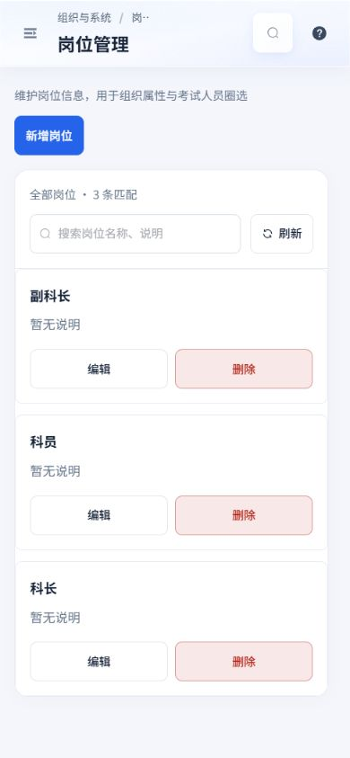
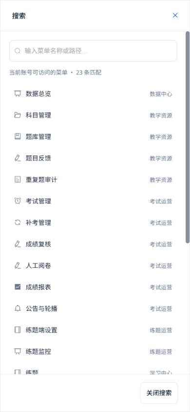
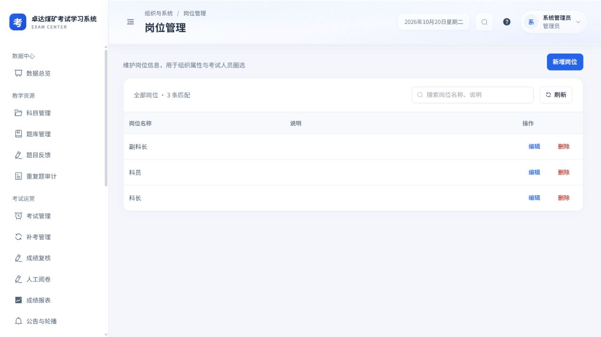
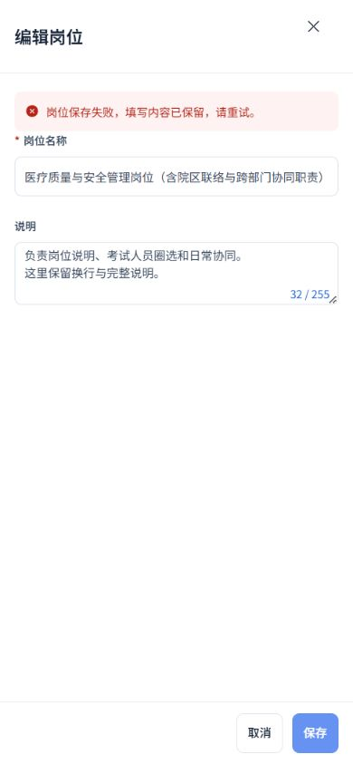
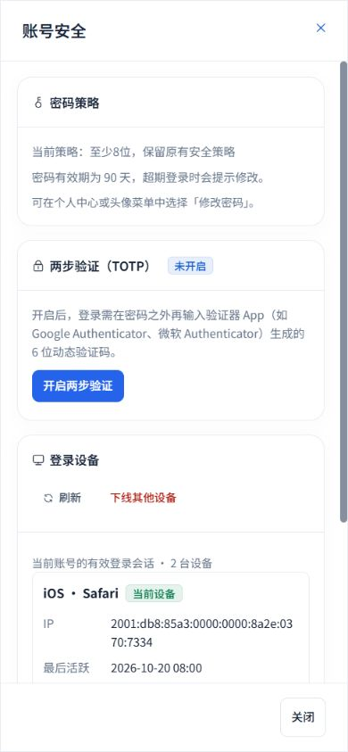
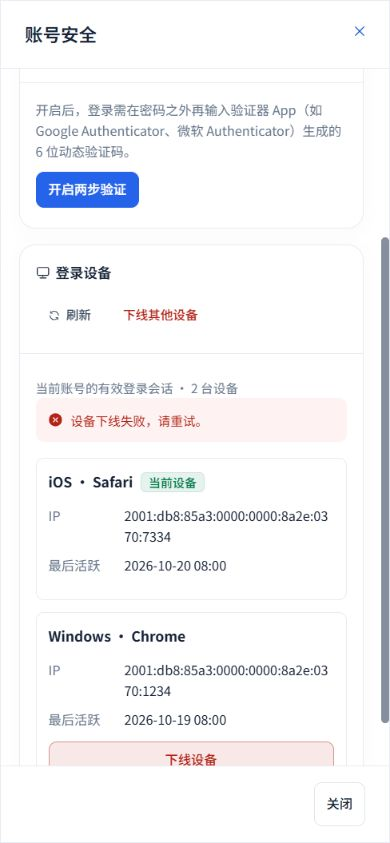
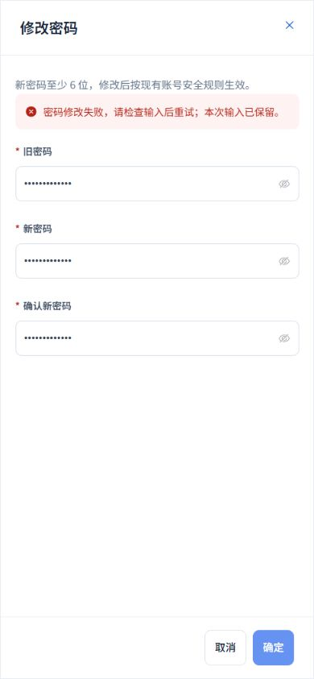
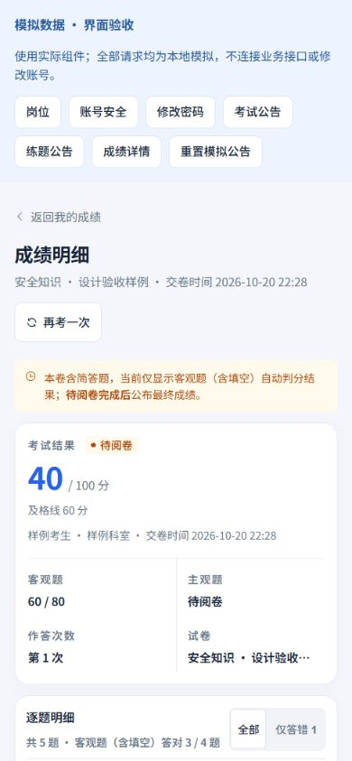
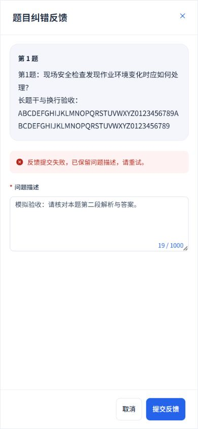

2026-10-20 · Workbuddy 01 · 当前本地实现验收
剩余页面与弹窗，统一收尾
沿用白侧栏、浅灰蓝底、蓝色操作、16 px卡片及现行玻璃顶栏。此次补齐账号、岗位、公告、成绩纠错与全局搜索/帮助，并逐项核对完整设计目录；保留原功能、权限和服务端安全限制。
设计目录含44条页面/路由设计与18项共享组件/框架。所有源文件存在、实际页面模板采用登记布局，含弹窗源文件均有弹窗设计；桌面、手机与五种状态规范完整。其余考生、练题与专用流程结合前轮已保存验收和本轮全量回归核对，不把当前管理员菜单检查称为所有角色的真实操作。
本轮具体落地
- 账号安全：手机全屏与独立滚动正文，设备改为完整IP/活跃时间卡片；识别iPhone时优先采用iOS标识。安全与设备操作互斥，失败原位提示并保留输入，当前设备仍不可下线；原TOTP、恢复码、复制/下载、密码校验与二次确认保持。
- 修改密码：沿用当前最短长度，提交前检查必填、长度及两次一致性；字段错误就地聚焦，失败保留输入。提交期间禁止重复请求和关闭，成功按原接口生效。
- 岗位管理：桌面表格与手机完整卡片，保留名称、说明及原组织/考务用途。编辑空名称就地报错，保存失败保留草稿；删除确认及请求互斥，失败保留列表并显示岗位上下文；保存后读取采用最新请求，旧首屏响应不能覆盖新列表。
- 考试/练题公告：手机完整阅读、富文本局部滚动、固定44px关闭；轮播可键盘操作。重要公告等关闭动画及模型同步完成后再推进，已通过真实浏览器确认甲、乙、丙逐条显示；保留原一次提醒与已读回执规则。
- 成绩明细：长题干保留段落与换行，知识点完整显示，手机返回与筛选44px。考试纠错复用完整弹窗，冻结原题和答卷来源、1000字就地校验，失败保留说明；调用原考试反馈接口，练题仍调用原会话接口，管理员保持原有无入口限制。
- 全局搜索与帮助：手机全屏、固定44px底部关闭；菜单项至少44px，显示当前账号真实匹配范围与零匹配空态。菜单筛选、快捷键、导航与权限保持原逻辑；补齐帮助中约定的回车跳转，有匹配时跳转首项，无匹配时保持空态。
实际页面核验
当前管理员23个菜单页面在1440×900、390×844、320×740、844×390完成加载后均无整页横向溢出或错误状态。初次抽查的1280×720与加载态另保留在原始记录，不计入92组最终检查。菜单权限页一次开发模块加载失败，经页面原有重载入口恢复后通过。
实际账号安全、空密码表单、菜单搜索与帮助共16组最终检查：弹窗及底栏均在视口内，底栏按钮均为44px。仅只读打开密码与安全页面，不修改账号、会话或业务数据。搜索实际显示当前管理员23条可访问菜单，输入无匹配条件后显示0条。







失败、长内容与队列的隔离样例
以下使用真实Vue组件和隔离模拟接口；岗位长名称、IPv6、密码及安全失败、考试纠错、公告内容均为模拟数据，不写业务接口。保存草稿、请求锁定、管理员无入口、当前设备保护与反馈来源同时由测试覆盖。













模拟观察记录共24组，包含迭代过程的桌面底栏尺寸；最终账号等实际弹窗的44px尺寸以16组最终记录为准。
全量验证与保留范围
- 89个测试文件、593项前端测试通过，包含题库维护、账号提交保护、岗位错误恢复、公告关闭时序、考试/练题反馈来源、五类题型、路由与权限等原有回归。
- TypeScript检查通过；生产构建通过，耗时30.08秒。
- 62项设计/模板/桌面/手机/状态核对通过，设计脚本与Git差异空白检查通过。
- 本轮未修改后端、路由守卫、权限Store或认证接口；原题型、授权、考务、安全策略与服务端归属校验保持。未执行实际密码修改、TOTP变更、设备下线、岗位删除或考试反馈提交。
生产构建通过（30.08秒）；TypeScript通过；最终全量89个文件、593项测试通过。
展开完整62项设计与实施核对
| 页面/组件 | 对应源文件 | 设计与模板 | 验证依据 |
|---|---|---|---|
| 暂无页面权限/no-access | src/views/common/NoAccessPage.vue | 模板 / 桌面 / 手机 / 五种状态 ✓ | 前轮验收 + 本轮全量回归 |
| 登录/login | src/views/LoginPage.vue | 模板 / 桌面 / 手机 / 五种状态 ✓ | 前轮验收 + 本轮全量回归 |
| 在线答题/exam/taking/:recordId | src/views/exam/ExamTakingPage.vue | 模板 / 桌面 / 手机 / 五种状态 / 弹窗设计3项 ✓ | 前轮验收 + 本轮全量回归 |
| 数据总览/admin/dashboard | src/views/admin/DashboardPage.vue | 模板 / 桌面 / 手机 / 五种状态 ✓ | 本轮实际页面4视口 ✓ |
| 科室管理/admin/departments | src/views/admin/DepartmentPage.vue | 模板 / 桌面 / 手机 / 五种状态 / 弹窗设计1项 ✓ | 本轮实际页面4视口 ✓ |
| 用户管理/admin/users | src/views/admin/UserPage.vue | 模板 / 桌面 / 手机 / 五种状态 / 弹窗设计1项 ✓ | 本轮实际页面4视口 ✓ |
| 科目管理/admin/subjects | src/views/admin/SubjectManagePage.vue | 模板 / 桌面 / 手机 / 五种状态 / 弹窗设计1项 ✓ | 本轮实际页面4视口 ✓ |
| 角色管理/admin/roles | src/views/admin/RoleManagePage.vue | 模板 / 桌面 / 手机 / 五种状态 / 弹窗设计2项 ✓ | 本轮实际页面4视口 ✓ |
| 岗位管理/admin/positions | src/views/admin/PositionManagePage.vue | 模板 / 桌面 / 手机 / 五种状态 / 弹窗设计1项 ✓ | 本轮实际页面4视口 ✓ |
| 题目反馈/admin/question-feedback | src/views/admin/QuestionFeedbackPage.vue | 模板 / 桌面 / 手机 / 五种状态 / 弹窗设计1项 ✓ | 本轮实际页面4视口 ✓ |
| 重复题审计/admin/duplicate-questions | src/views/admin/DuplicateQuestionsPage.vue | 模板 / 桌面 / 手机 / 五种状态 ✓ | 本轮实际页面4视口 ✓ |
| 练题监控/admin/practice-monitor | src/views/admin/PracticeMonitorPage.vue | 模板 / 桌面 / 手机 / 五种状态 / 弹窗设计1项 ✓ | 本轮实际页面4视口 ✓ |
| 考试管理/admin/exams | src/views/admin/ExamManagePage.vue | 模板 / 桌面 / 手机 / 五种状态 / 弹窗设计2项 ✓ | 本轮实际页面4视口 ✓ |
| 新建考试/admin/exams/new | src/views/admin/ExamEditorPage.vue | 模板 / 桌面 / 手机 / 五种状态 ✓ | 前轮验收 + 本轮全量回归 |
| 编辑考试/admin/exams/:id/edit | src/views/admin/ExamEditorPage.vue | 模板 / 桌面 / 手机 / 五种状态 ✓ | 前轮验收 + 本轮全量回归 |
| 题目预览/admin/exams/:id/preview | src/views/author/PaperPreviewPage.vue | 模板 / 桌面 / 手机 / 五种状态 ✓ | 前轮验收 + 本轮全量回归 |
| 监考监控/admin/exams/:id/monitor | src/views/admin/ExamMonitorPage.vue | 模板 / 桌面 / 手机 / 五种状态 ✓ | 前轮验收 + 本轮全量回归 |
| 补考管理/admin/retakes | src/views/admin/RetakeManagePage.vue | 模板 / 桌面 / 手机 / 五种状态 / 弹窗设计1项 ✓ | 本轮实际页面4视口 ✓ |
| 成绩报表/admin/scores | src/views/admin/ScoreReportPage.vue | 模板 / 桌面 / 手机 / 五种状态 / 弹窗设计2项 ✓ | 本轮实际页面4视口 ✓ |
| 成绩复核/admin/appeals | src/views/admin/AppealManagePage.vue | 模板 / 桌面 / 手机 / 五种状态 / 弹窗设计1项 ✓ | 本轮实际页面4视口 ✓ |
| 人工阅卷/admin/reviews | src/views/admin/ReviewPage.vue | 模板 / 桌面 / 手机 / 五种状态 ✓ | 本轮实际页面4视口 ✓ |
| 练题端设置/admin/practice-settings | src/views/admin/PracticeSettingsPage.vue | 模板 / 桌面 / 手机 / 五种状态 / 弹窗设计1项 ✓ | 本轮实际页面4视口 ✓ |
| 公告与轮播/admin/content | src/views/admin/ContentViewPage.vue | 模板 / 桌面 / 手机 / 五种状态 / 弹窗设计3项 ✓ | 本轮实际页面4视口 ✓ |
| 系统设置/admin/settings | src/views/admin/SettingsPage.vue | 模板 / 桌面 / 手机 / 五种状态 / 弹窗设计1项 ✓ | 本轮实际页面4视口 ✓ |
| 菜单权限/admin/permissions | src/views/admin/MenuPermissionPage.vue | 模板 / 桌面 / 手机 / 五种状态 ✓ | 本轮实际页面4视口 ✓ |
| 审计日志/admin/audit | src/views/admin/AuditLogPage.vue | 模板 / 桌面 / 手机 / 五种状态 / 弹窗设计2项 ✓ | 本轮实际页面4视口 ✓ |
| 登录日志/admin/login-logs | src/views/admin/LoginLogPage.vue | 模板 / 桌面 / 手机 / 五种状态 ✓ | 本轮实际页面4视口 ✓ |
| 系统维护/admin/maintenance | src/views/admin/SystemMaintenancePage.vue | 模板 / 桌面 / 手机 / 五种状态 ✓ | 本轮实际页面4视口 ✓ |
| 题库管理/author/banks | src/views/author/QuestionBankListPage.vue | 模板 / 桌面 / 手机 / 五种状态 ✓ | 本轮实际页面4视口 ✓ |
| 首页/exam/home | src/views/exam/ExamHomePage.vue | 模板 / 桌面 / 手机 / 五种状态 ✓ | 前轮验收 + 本轮全量回归 |
| 我的考试/exam/my | src/views/exam/MyExamPage.vue | 模板 / 桌面 / 手机 / 五种状态 ✓ | 前轮验收 + 本轮全量回归 |
| 我的成绩/exam/scores | src/views/exam/MyScorePage.vue | 模板 / 桌面 / 手机 / 五种状态 / 弹窗设计2项 ✓ | 前轮验收 + 本轮全量回归 |
| 我的补考/exam/retakes | src/views/exam/MyRetakePage.vue | 模板 / 桌面 / 手机 / 五种状态 ✓ | 前轮验收 + 本轮全量回归 |
| 成绩明细/score-detail/:recordId | src/views/exam/ScoreDetailPage.vue | 模板 / 桌面 / 手机 / 五种状态 ✓ | 本轮专门精修及回归 ✓ |
| 消息中心/notifications | src/views/common/NotificationCenterPage.vue | 模板 / 桌面 / 手机 / 五种状态 / 弹窗设计1项 ✓ | 前轮验收 + 本轮全量回归 |
| 个人中心/profile | src/views/common/ProfilePage.vue | 模板 / 桌面 / 手机 / 五种状态 ✓ | 前轮验收 + 本轮全量回归 |
| 练题/exam/practice | src/views/practice/PracticeHomePage.vue | 模板 / 桌面 / 手机 / 五种状态 / 弹窗设计1项 ✓ | 本轮实际页面4视口 ✓ |
| 开始练题/exam/practice/banks/:bankId | src/views/practice/PracticeSessionPage.vue | 模板 / 桌面 / 手机 / 五种状态 / 弹窗设计1项 ✓ | 前轮验收 + 本轮全量回归 |
| 再次练习/exam/practice/reans | src/views/practice/PracticeSessionPage.vue | 模板 / 桌面 / 手机 / 五种状态 / 弹窗设计1项 ✓ | 前轮验收 + 本轮全量回归 |
| 错题本/exam/practice/wrong-book | src/views/practice/PracticeWrongBookPage.vue | 模板 / 桌面 / 手机 / 五种状态 ✓ | 前轮验收 + 本轮全量回归 |
| 学习报告/exam/practice/report | src/views/practice/PracticeReportPage.vue | 模板 / 桌面 / 手机 / 五种状态 / 弹窗设计2项 ✓ | 前轮验收 + 本轮全量回归 |
| 收藏夹/exam/practice/favorites | src/views/practice/PracticeFavoritesPage.vue | 模板 / 桌面 / 手机 / 五种状态 ✓ | 前轮验收 + 本轮全量回归 |
| 我的练题/exam/practice/profile | src/views/practice/PracticeProfilePage.vue | 模板 / 桌面 / 手机 / 五种状态 / 弹窗设计1项 ✓ | 前轮验收 + 本轮全量回归 |
| 科目题库详情/author/banks?bankId=:bankId | src/views/author/QuestionBankDetailPage.vue | 模板 / 桌面 / 手机 / 五种状态 / 弹窗设计3项 ✓ | 前轮验收 + 本轮全量回归 |
| 特殊考试安排共享弹窗 / 框架 | src/views/admin/ExamExceptionDialog.vue | 模板 / 桌面 / 手机 / 五种状态 / 弹窗设计1项 ✓ | 前轮验收 + 本轮全量回归 |
| 导出成绩共享弹窗 / 框架 | src/views/admin/ScoreExportDialog.vue | 模板 / 桌面 / 手机 / 五种状态 / 弹窗设计1项 ✓ | 前轮验收 + 本轮全量回归 |
| 科目编辑共享弹窗 / 框架 | src/views/admin/SubjectFormDrawer.vue | 模板 / 桌面 / 手机 / 五种状态 / 弹窗设计1项 ✓ | 前轮验收 + 本轮全量回归 |
| 批量导入账号共享弹窗 / 框架 | src/views/admin/UserImportDialog.vue | 模板 / 桌面 / 手机 / 五种状态 / 弹窗设计1项 ✓ | 前轮验收 + 本轮全量回归 |
| 批量维护授权出题人共享弹窗 / 框架 | src/views/author/BankAuthorBatchDialog.vue | 模板 / 桌面 / 手机 / 五种状态 / 弹窗设计1项 ✓ | 前轮验收 + 本轮全量回归 |
| 复制题库共享弹窗 / 框架 | src/views/author/BankCloneDialog.vue | 模板 / 桌面 / 手机 / 五种状态 / 弹窗设计1项 ✓ | 前轮验收 + 本轮全量回归 |
| 批量编辑试题共享弹窗 / 框架 | src/views/author/QuestionBatchEditDialog.vue | 模板 / 桌面 / 手机 / 五种状态 / 弹窗设计1项 ✓ | 前轮验收 + 本轮全量回归 |
| 试题编辑共享弹窗 / 框架 | src/views/author/QuestionFormDialog.vue | 模板 / 桌面 / 手机 / 五种状态 / 弹窗设计1项 ✓ | 前轮验收 + 本轮全量回归 |
| 批量导入试题共享弹窗 / 框架 | src/views/author/QuestionImportDialog.vue | 模板 / 桌面 / 手机 / 五种状态 / 弹窗设计1项 ✓ | 前轮验收 + 本轮全量回归 |
| 考试结果共享弹窗 / 框架 | src/views/exam/components/ExamResultDialog.vue | 模板 / 桌面 / 手机 / 五种状态 / 弹窗设计1项 ✓ | 前轮验收 + 本轮全量回归 |
| 练题公告共享弹窗 / 框架 | src/views/practice/components/PracticeNoticeCard.vue | 模板 / 桌面 / 手机 / 五种状态 / 弹窗设计2项 ✓ | 本轮专门精修及回归 ✓ |
| 练习设置共享弹窗 / 框架 | src/views/practice/components/PracticeOptionModal.vue | 模板 / 桌面 / 手机 / 五种状态 / 弹窗设计1项 ✓ | 前轮验收 + 本轮全量回归 |
| 账号安全共享弹窗 / 框架 | src/components/account/AccountSecurityDialog.vue | 模板 / 桌面 / 手机 / 五种状态 / 弹窗设计1项 ✓ | 本轮专门精修及回归 ✓ |
| 修改密码共享弹窗 / 框架 | src/components/account/ChangePasswordDialog.vue | 模板 / 桌面 / 手机 / 五种状态 / 弹窗设计1项 ✓ | 本轮专门精修及回归 ✓ |
| 公告详情与必读通知共享弹窗 / 框架 | src/components/common/ContentBoard.vue | 模板 / 桌面 / 手机 / 五种状态 / 弹窗设计2项 ✓ | 本轮专门精修及回归 ✓ |
| 完整列表共享弹窗 / 框架 | src/components/common/PagedOverview.vue | 模板 / 桌面 / 手机 / 五种状态 / 弹窗设计1项 ✓ | 前轮验收 + 本轮全量回归 |
| 全局搜索与帮助共享弹窗 / 框架 | src/layouts/AppLayout.vue | 模板 / 桌面 / 手机 / 五种状态 / 弹窗设计2项 ✓ | 本轮专门精修及回归 ✓ |
| 题目纠错反馈共享弹窗 / 框架 | src/views/practice/components/QuestionFeedbackDialog.vue | 模板 / 桌面 / 手机 / 五种状态 / 弹窗设计1项 ✓ | 本轮专门精修及回归 ✓ |